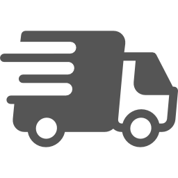

Prism is a cloud-based solution designed to assist in the management of warehouse stocks
throughout the supply chain.Prism algorithms are developed for the big data analysis.
The algorithm improves itself independently based on trends in the supply chain and provides
accurate information needed to regulate the process of delivery and procurement. Prism provides
management with the information of the quantity of goods to be delivered to a specific point
of sales, as well as with the information about the storage positions (Stock Keeping Unit–SKU),
that must be ordered from the central warehouse.
Prism is a solution that is ideally suited to different business models. It is suitable both
for the local supply network and for the network with international suppliers. The solution
provides accurate information for product portfolios with different characteristics—from
perishable goods to products with a long life cycle. The connection of Prism to the client
system is made through the individual implementation program developed to meet customer needs.
The implementation program includes training of employees, configuration and setup of the
program, processes’ improvement and development of the necessary documentation.
Before & After PRISM
thumb_down
Loss of sales because of the lack of inventory.
Blocked money in form of improper inventory.
Non-optimal products portfolio.
thumb_up
Increase of sales.
Increased stock rotations.
Portfolio of the products is balanced to the season.

Increase the efficiency of your stock management with our software